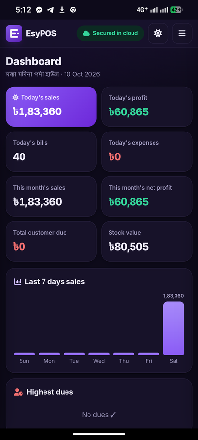
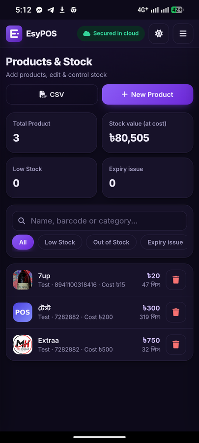
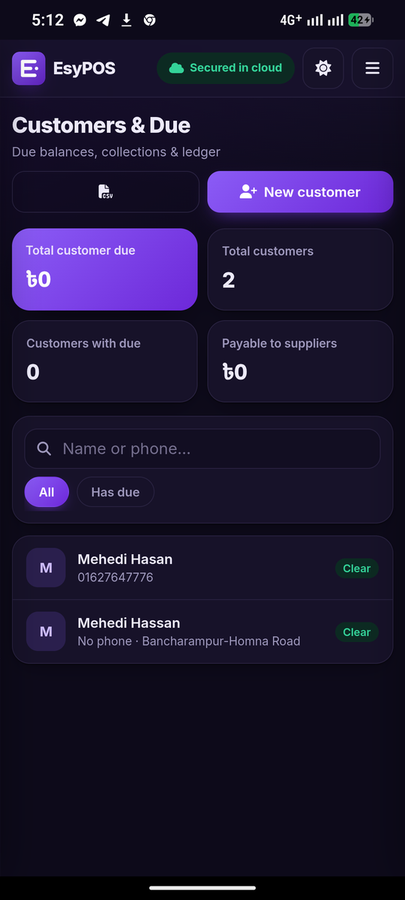
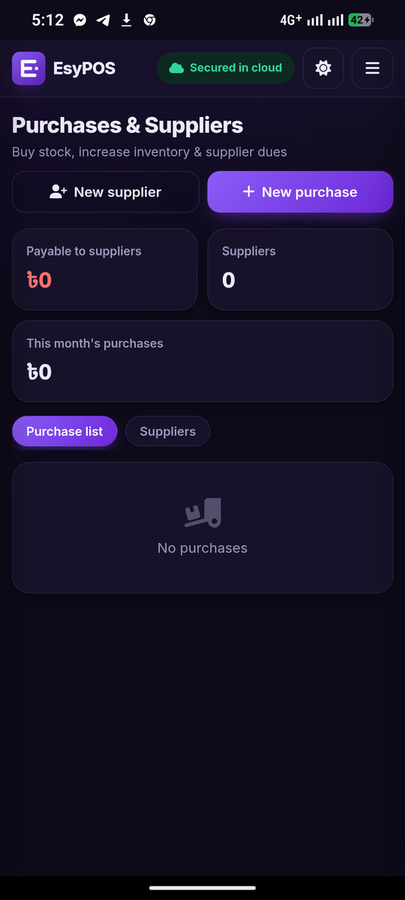
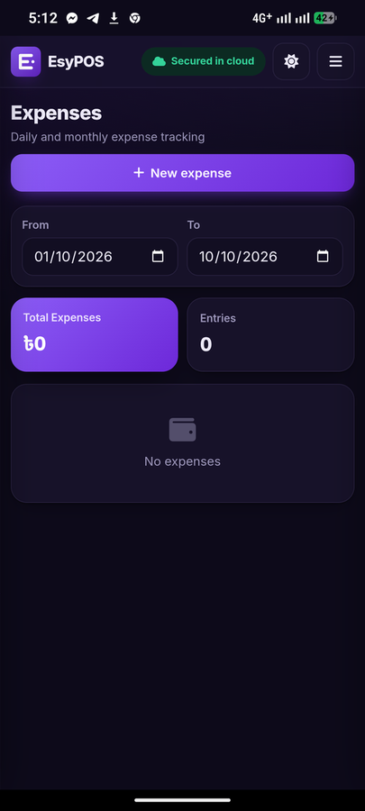
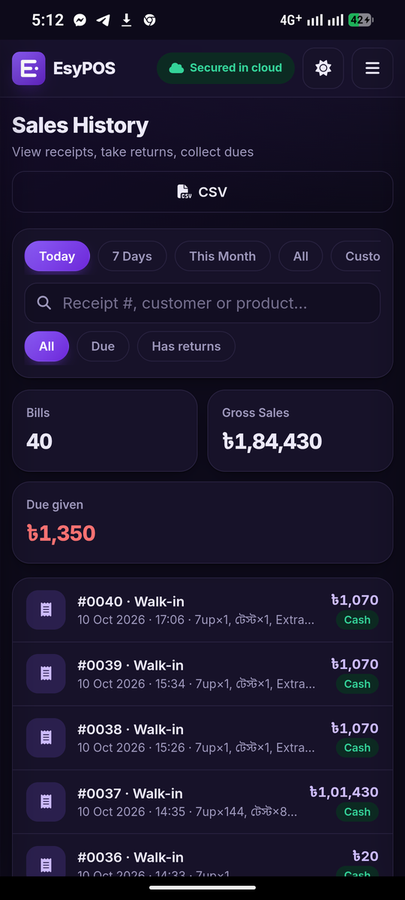
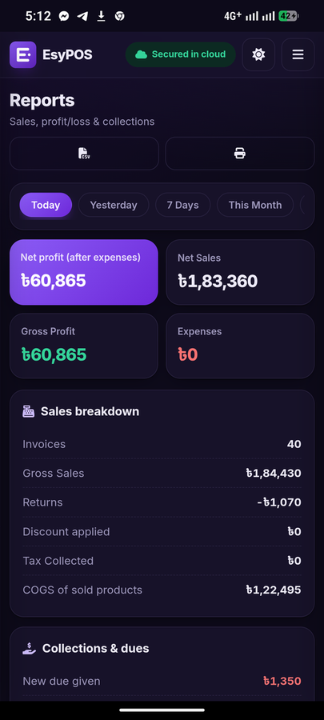
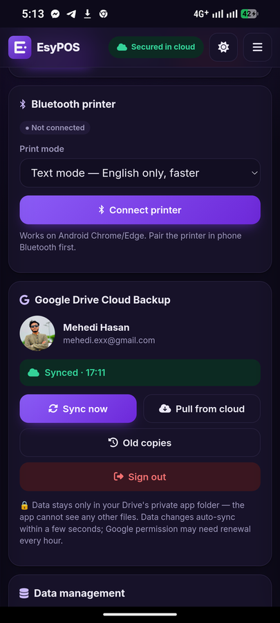

ফ্রি POS সফটওয়্যার – দোকানের বিক্রি, স্টক ও বাকির হিসাব
EsyPOS একটি ফ্রি, অফলাইনে চলা POS অ্যাপ। মুদি দোকান, ফার্মেসি, কাপড়ের দোকান, রেস্টুরেন্ট, মোবাইল শপ ও পাইকারি ব্যবসার জন্য। দ্রুত বিল করুন, স্টক ও বাকি দেখুন, লাভ-ক্ষতির হিসাব পান। ডেটা আপনার নিজের Google Drive-এ ব্যাকআপ হয়।
EsyPOS চালু করুনEnglishফিচার
দ্রুত বিলিং
পণ্য সার্চ, বারকোড স্ক্যান, ডিসকাউন্ট, ট্যাক্স এবং বিল হোল্ড করে পরে চালু করা।
নগদ, কার্ড, মোবাইল ব্যাংকিং, বাকি
কুইক ক্যাশ বাটন, ফেরত টাকা হিসাব ও আংশিক পেমেন্ট।
রসিদ ও প্রিন্ট
৫৮/৮০ মিমি প্রিন্ট, ব্লুটুথ প্রিন্টার, WhatsApp ও SMS-এ শেয়ার।
বাকির খাতা
কাস্টমারের বাকি, আদায়, ক্রেডিট লিমিট ও রিমাইন্ডার।
স্টক ও মেয়াদ
কম স্টক ও মেয়াদ শেষের সতর্কতা, ছবি, CSV ইমপোর্ট/এক্সপোর্ট।
ক্রয় ও সাপ্লায়ার
সাপ্লায়ারের বাকি ও পেমেন্টসহ স্টক ইন।
রিটার্ন ও খরচ
রিটার্নে স্টক ফেরত আসে; খরচ ক্যাটাগরি ও তারিখ অনুযায়ী।
লাভ-ক্ষতির রিপোর্ট
নিট বিক্রি, মোট ও নিট লাভ, আদায় এবং ৭ দিনের চার্ট।
অফলাইনে চলে
ইন্টারনেট ছাড়াই বিক্রি। যেকোনো ডিভাইসে ইনস্টল করা যায়।
Google Drive ব্যাকআপ
নিজের Drive-এ অটো ব্যাকআপ। ফোন বদলালেও ডেটা নিরাপদ।
PIN লক ও প্রাইভেসি
PIN দিয়ে অ্যাপ লক। কোনো বিজ্ঞাপন বা ট্র্যাকিং নেই।
ডার্ক ও লাইট থিম
ফোন, ট্যাবলেট ও কম্পিউটারের জন্য পরিষ্কার ডিজাইন।
স্ক্রিনশট








কীভাবে শুরু করবেন
১. EsyPOS খুলে Google দিয়ে সাইন ইন করুন। ২. পণ্য যোগ করে বিল করা শুরু করুন। ৩. হোম স্ক্রিনে ইনস্টল করুন, ইন্টারনেট না থাকলেও বিক্রি চলবে।
সচরাচর প্রশ্ন
EsyPOS কি সত্যিই ফ্রি?
হ্যাঁ। EsyPOS সম্পূর্ণ ফ্রি, কোনো মাসিক ফি বা লুকানো খরচ নেই।
ইন্টারনেট ছাড়া কি চলবে?
হ্যাঁ। একবার খোলার পর ইন্টারনেট ছাড়াই বিক্রি করা যায়। ইন্টারনেট এলে ডেটা নিজে থেকেই Google Drive-এ ব্যাকআপ হয়।
আমার ডেটা কোথায় থাকে?
আপনার ডিভাইসে এবং আপনার নিজের Google Drive-এর প্রাইভেট ফোল্ডারে। EsyPOS-এর কোনো সার্ভার নেই, তাই আপনার ডেটা আমরা দেখতে পাই না।
কোন কোন ডিভাইসে চলবে?
Android, iPhone, Windows, Mac ও Linux-এর যেকোনো আধুনিক ব্রাউজারে। ব্রাউজার থেকে অ্যাপের মতো ইনস্টল করা যায়।
বারকোড স্ক্যান ও রসিদ প্রিন্ট করা যায়?
হ্যাঁ। ফোনের ক্যামেরা, USB বা ব্লুটুথ স্ক্যানার দিয়ে স্ক্যান করা যায়। ৫৮/৮০ মিমি কাগজে বা ব্লুটুথ থার্মাল প্রিন্টারে প্রিন্ট করা যায়।
কাস্টমারের বাকি ও সাপ্লায়ারের হিসাব রাখা যায়?
হ্যাঁ। প্রতিটি কাস্টমার ও সাপ্লায়ারের আলাদা খাতা আছে। WhatsApp বা SMS-এ বাকির রিমাইন্ডার পাঠানো যায়।
ফোন হারিয়ে গেলে বা বদলালে কী হবে?
একই Google অ্যাকাউন্টে সাইন ইন করলেই Drive ব্যাকআপ থেকে সব ডেটা ফিরে আসবে।